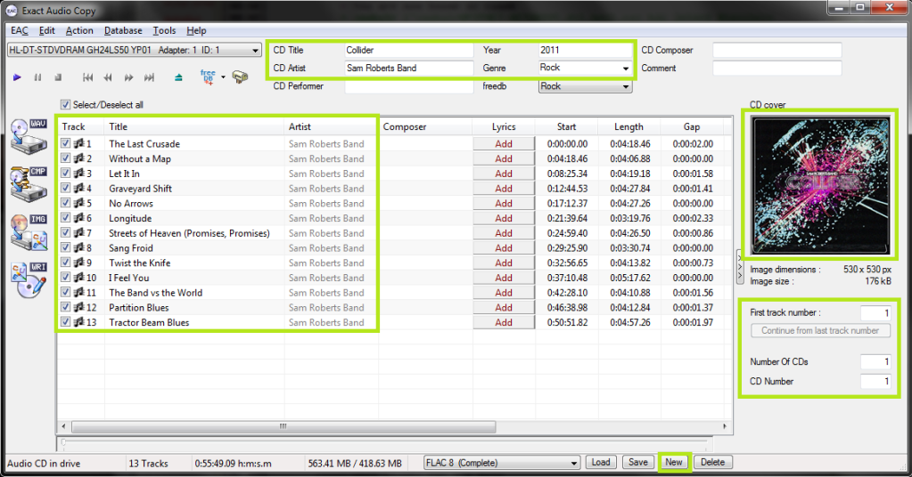
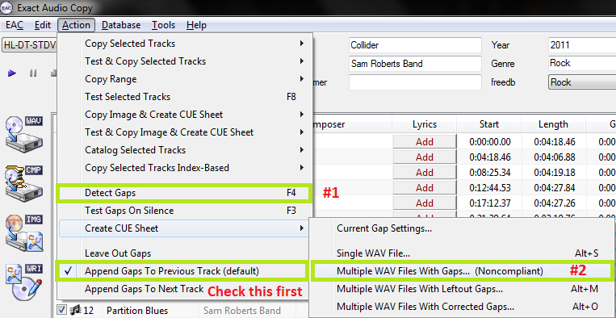
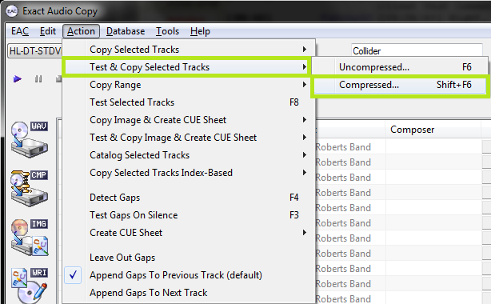
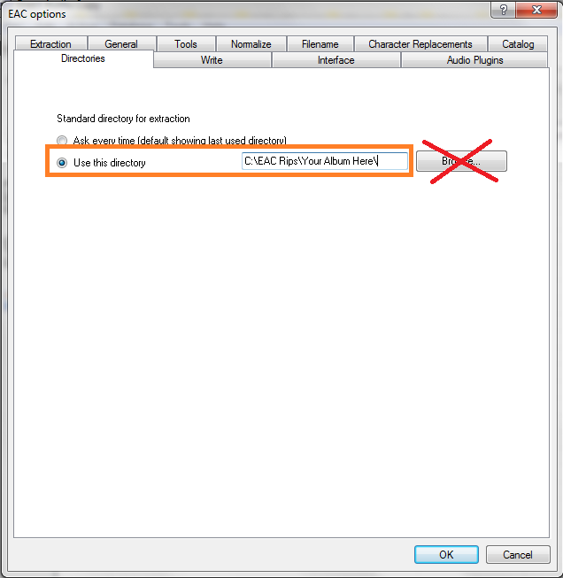

This guide was made for EAC version 1.0 beta 3 and will not completely work with earlier versions. Versions 0.99 or earlier should use the blowfish guide.
Anything with a green outline around it is a required setting. Anything orange is required but depends on your drive. Anything unmarked is optional.
This is meant to be a no-frills guide with little extra info. A more comprehensive (but outdated) guide can be found here:
http://blowfish.be/eac
Step 1: Tagging

So now let's look at the main window. Be sure everything is named correctly here, as these will be the tags on your ripped files. If you're ripping a classical CD, you may wish to fill in the Composer/Performer fields.
Drag a cover image into the EAC window. I think ~500x500 is a decent size in most cases. Google images is your friend here.
If you're ripping a box set, you may wish to use the options under the cover image, otherwise leave them all as "1".
Finally, if you want to add lyrics to the tracks, use the "Lyrics" button.
Note: I've also highlighted the "New" button where you can save your settings. This is not a necessary step each time you rip.
Step 2: Gap Detection and Cuesheets

The pre-rip stuff happens here. Make sure "Append Gaps to Previous Track (default)" is checked. It should be. Next, hit the options in the order shown.
First, hit "Detect Gaps". This is very important. If the first track is highlighted in red, you have a hidden track. You'll want to look at this section of the blowfish.be guide.
Next, go to Create CUE Sheet -> Multiple WAV Files With Gaps... (Noncompliant). This is usually where I create the folder for ripping as well. Do NOT rip your tracks to any directory containing your name. You should NEVER edit a log for any reason, especially now that we have checksums. A simple C:\EAC Rips is fine.
I name my directories as follows:
Artist - Album (Year) [Format] {Extra}
So for example, with the album in the screenshots, it'd be
Sam Roberts Band - Collider (2011) [FLAC] {UMC 0252764577}
However, as long as it contains the album name and no nested folders (don't do \Artist\Album\), you're fine by the rules here.
Anyway, make the folder, save the .cue file into it. I usually just name mine Noncompliant.cue, it doesn't really matter.
Step 3: Ripping

Finally, the rip itself! Make sure all the tracks are checkmarked in the main window unless there are some you don't want to rip.
Test & Copy -> Compressed.
Depending on your drive and whether or not the CD is scratched, this could take anywhere from ten minutes to four hours. Be patient.
There's a known bug in EAC where opening the file select dialog will crash the program on some machines. You can use a temporary work-around by setting a manual directory for each rip in EAC Options->Directories. You can see an example of this below. Pressing "Browse" on this screen will likely crash the program as well, so you may need to type or paste in the path by hand.
